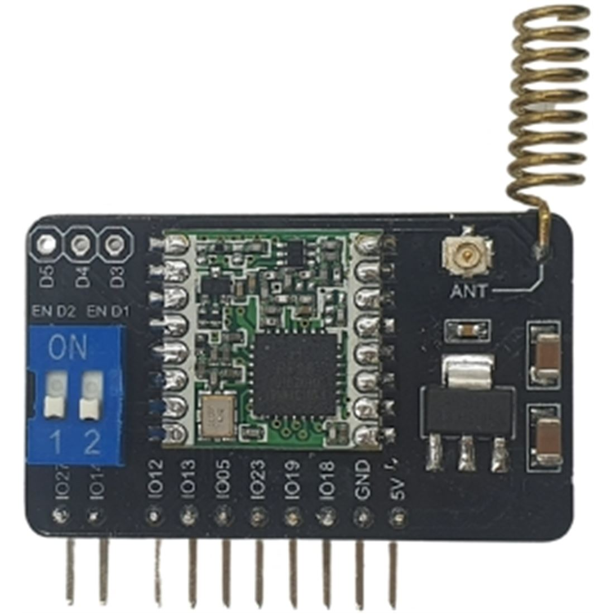
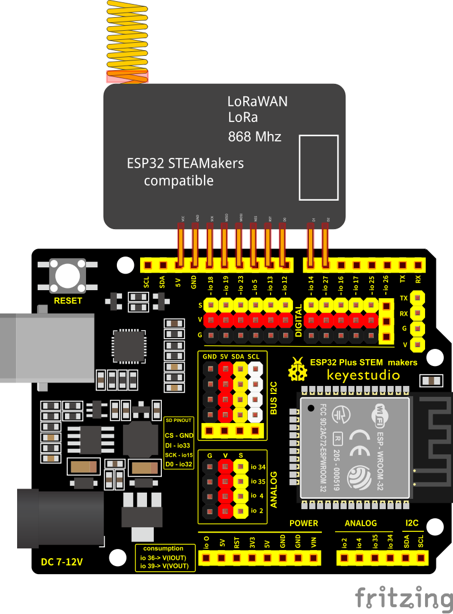

Módulo Lora - LoRaWan. Comunicaciones LoRa
Los módulos LoRa pueden enviar y recibir señales LoRa (LongRange). LoRa es una tecnología de comunicación patentada, que está pensada para comunicaciones con un bajo consumo de energía, largo alcance y buena inmunidad frente al ruido, lo que la hace ideal para aplicaciones IoT.

Ordenes LoRa en arduinoblocks
Conexionado
El módulo LoRa se pincha directamente en la placa ESP32 STEAMakers entre el pin superior de 5V y el pin digital 6 (D6 / IO27). Hay que hacer coincidir el pin hembra de 5V de la placa con el pin VCC del módulo LoRa, tal como se muestra en el esquema de conexionado. La conexión de este módulo es de tipo SPI (utiliza el puerto SPI de la placa).

Tarea. Conexionado para primera comunicación LoRa
Conecta la pantalla oled, el sensor BMP280 y el módulo LoRa a la placa emisora de forma correcta. Conecta el módulo LoRa a la placa receptora de forma correcta. Este conexionado te servirá para la próxima práctica de comunicaciones entre placas.
Para saber más
LoRa y LoRaWAN en Arduinoblocks + ESP32 STEAMakers, por Juanjo López.